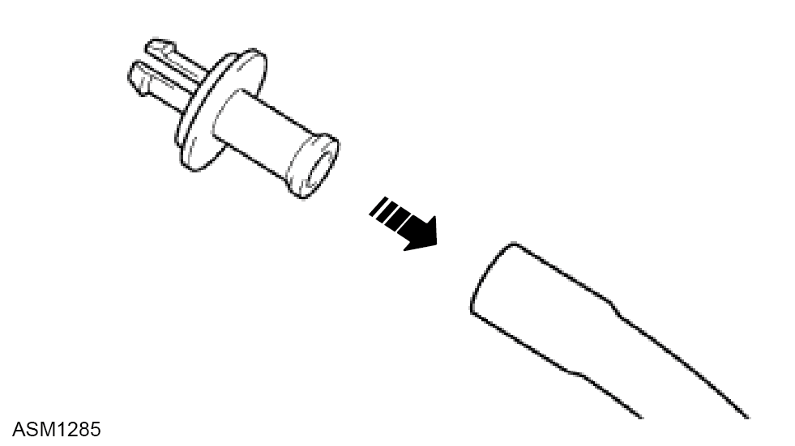
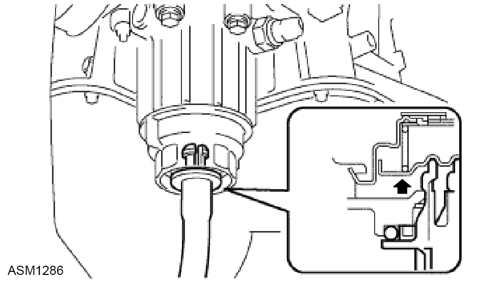
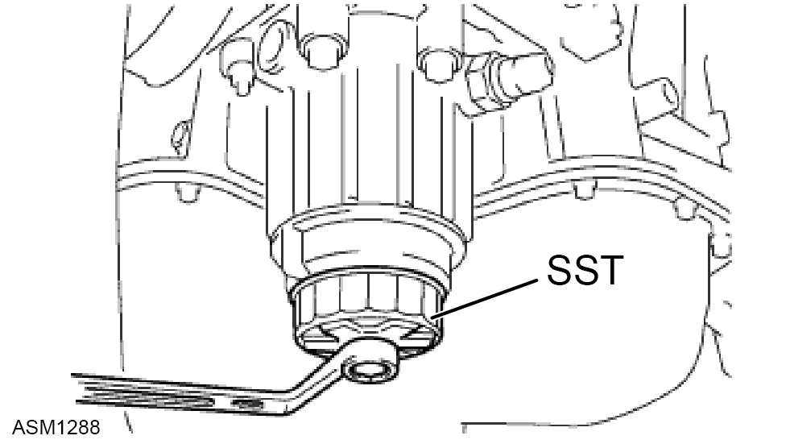
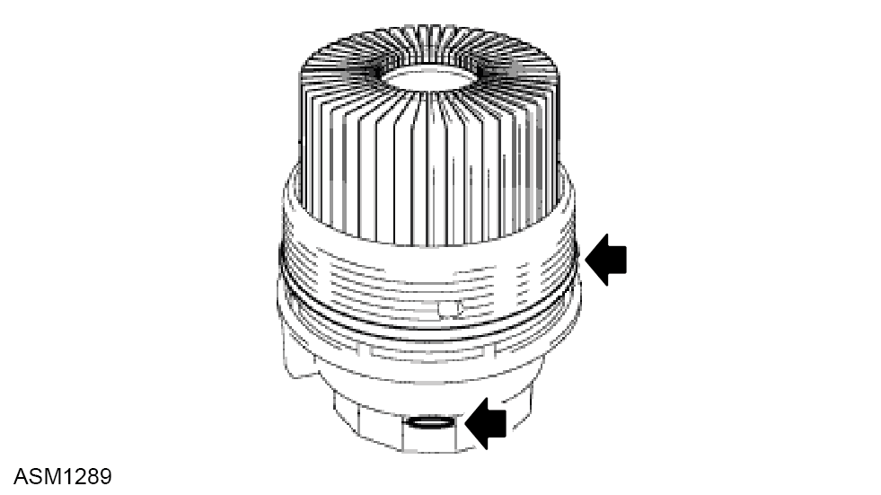

Removal


NOTE: Be sure to turn the pipe in the direction of the arrow to remove it.
 WARNING: Engine oil is a toxic substance and can be lethal if ingested.
WARNING: Engine oil is a toxic substance and can be lethal if ingested.
NOTE: Drain oil into a suitable container and dispose of appropriately.


 CAUTION: Be sure to remove the O-ring (for the cap) by hand, without using any tools, to prevent damage to the groove for the O-ring on the cap.
CAUTION: Be sure to remove the O-ring (for the cap) by hand, without using any tools, to prevent damage to the groove for the O-ring on the cap.